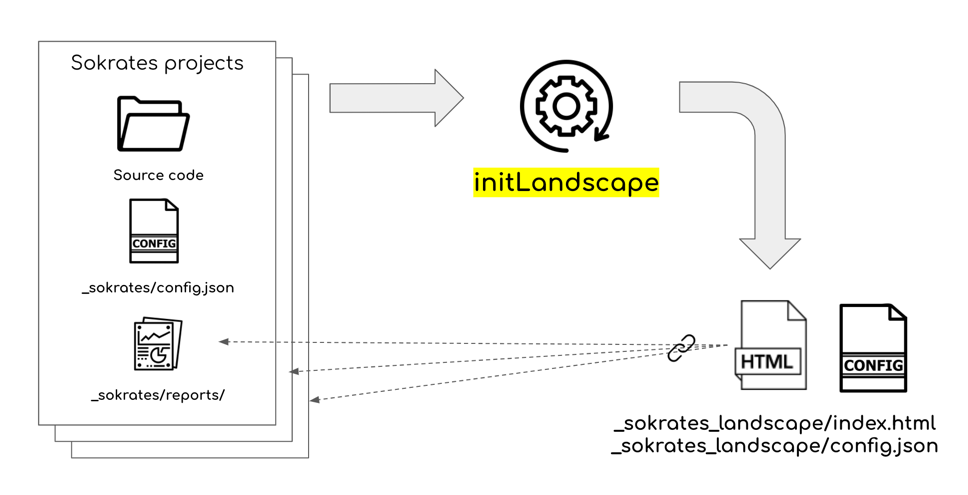

Landscape Analysis Overview
The Sokrates landscape analysis aggregates and indexes the Sokrates project analysis reports, providing a centralized and uniform view on multiple Sokrates projects. The analysis is called landscape because it draws a map of all projects you want to view from one place.
The landscape analyses provide a helicopter view on huge code bases. The uniform centralized index page provides an easy way to find and access details of individual Sokrates projects. The landscape analysis also provides an efficient way to aggregate and compare findings from dozens or hundreds of such projects.
To run a Sokrates landscape analysis, you need to get to the Sokrates project reports folder. Sokrates landscape analysis assumes that your projects are somewhere in deeper folders. Sokrates will recursively go through all folders, looking for all configuration and analysis result files. Sokrates will create a hierarchical view if other landscape analyses are on deeper levels. For details on Sokrates landscape commands, visit the command line interface page.

Figure 1: The updateLandscape command goes through all folders to find Sokrates projects, adding them to the index list.
Sokrates landscape analysis provides the following types of insights:
- Overview of code volume and trends per programming languages
- Overview of projects and commit and contributor trends
- Overview of contributors and their recent and historical overview
- Team topologies overview, rendering dependencies between people working on the same projects
An alternative to the landscape analysis is to scope a whole codebase as one Sokrates project, defining each sub-project as a component. However, for code bases of dozens of millions of lines of code, such an approach may not be practical enough due to the length of analysis. Instead, you can define many smaller projects and use the landscape analysis to provide a bigger picture.
You can find an example Sokrates landscape report at the sokrates.dev site. In this report, I have aggregated and indexed more that 1,000 Apache Software Foundation (ASF) open-source projects, with more than 100 millions of lines of code.